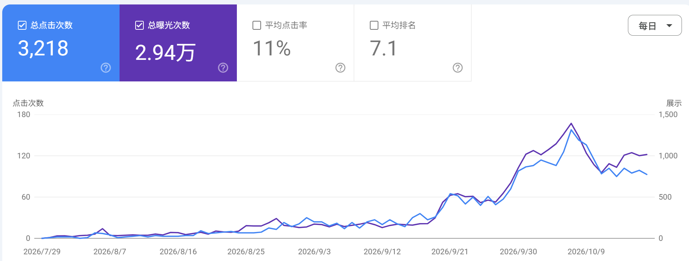

大家好，我是 9群的浩承。
我是 15 年毕业的程序员，在今年5月份全职出海。
出海这条路走了差不多一年半才跌跌撞撞达到了万刀，我太清楚在没拿到结果的焦虑期状态了,所以也想记录一下这一年多来做过的站，踩过的坑，给大家参考。
2024.12 第一个站：特朗普上任倒计时
2024.10 差不多在这个时间点关注到AI编程,那时候还用bolt，发现我居然也能写前端，也能部署一个网站了，挺好玩。
12月做了一个特朗普相关的网站，部署上线，看着世界各地的用户访问，感觉很开心. 然后挂Ad Sense, 一天有几十个流量，一个月下来居然拿到了第一美刀。 （我不记得那时候有没有看到哥飞公众号了， 有可能是看到了的，不然我应该不知道还可以挂Ad Sense）
第一个站就拿到了美元收益，给了不少信心。
2025.01 - 2025.05按自己想法瞎做的几个站
看到哥飞公众号里有一个讨论 morse code的文章,自己也做了一个，0 流量。 接着又做了一个 json 转换，接着又做了一个网速测试站,同样的 0 流量。
虽然没流量，但是实现自己想要实现的功能，上线一个网站很爽。
在 5月份的时候本来还想做 pdf转换。 做了两天突然发现,卧槽这不对呀，我这样做下去有啥意义。 做出来是很爽，但没用啊。特朗普那个网站只是赶上热点了而已，于是及时终止了这个pdf 网站的想法。
停下来想了下我到底想要什么，最终确定还是要收益。 上线产品虽然很爽，但不是现在我应该做的。
这期间其实已经有过加入哥飞社群的想法，但是自己体验到了 AI coding 的快感，就沉浸在开发本身，喜欢开发完一个产品带来的成就感。 加上自己又是处女座，开发到一半放弃这种事情是不能接受的，所以就在这里折腾了几个月。
说实话,这几个月也不能算浪费时间，或许没有这几个月对AI Coding 的兴趣和实践，自己也不会有很大的动力去抑制想要开发一个xx工具的冲动，转而接受哥飞这套找需求、为需求而开发的模式.
2025.06看完哥飞公众号，入群
我记得哥飞有篇文章里建议看完公众号文章再考虑入群，我就去看了。 花了一个月，记得有五百多篇文章，让我了解到原来做网站是这么运转的,找需求，发外链这些东西我从来不知道。 于是7月 15入群。
2025.07 第一次领会到发外链带来的收益
从6月底开始给morse code发外链，那时候也不会发，一天下班后就只能发几个。
- 到7 月中旬已经每天有20来个点击了，而之前几个月一直是 0.
- 到 7 月底有 100个点击，8 月中旬已经有200 个点击了。
这里通过实践让我相信，外链确实有用。
2025.08第一个新词站 wplace游戏词
8月份的时候我就想必须要找词做网站了,找了几天没结果也很烦躁，就发外链解压,因为发外链一条条的提交后是有成就感的,我至少干了一件具体的事。 而找需求找不到会觉得自己浪费了很多时间。
但过了几天发现我在逃避找需求，晚上下班全发外链去了根本没找需求. 然后又逼着自己找需求。
好在 8 月中旬的样子看到了wplace的这个游戏词,花了几天上站，第二天就有几千uv，当时惊呆了，新词确实猛，然后整个8月都在继续优化这个网站，还拿了 8月新词的十几名。
当时信心爆棚，觉得不过如此,外链找词我都会了，我就是出海的天选之人，网站做一个成一个（笑）。
2025.09 - 2025.12 第一个订阅站ai coloring page
9 月份觉得已经做过几个广告站，我要做订阅站了。 帖子里说看榜单，那我就去看了榜单，发现有个ai 涂色页的收入涨幅还不错,充分（瞎）调研了一番,kd低 竞争不多，开干。
那时候还没买模版，登录、支付啥的都自己撸了一遍（纯粹是按捺不住技术情节，这是巨坑），花了差不多一个月才从泥潭里爬出来在10.1上线，然后就发外链，半个月后终于出了第一单 挺高兴。（那时候还不知道博客评论外链这个概念，抄了竞品的外链全都是这样的，觉得这种外链还挺好发,结果发了一大堆博客评论）
好景不长，第二单隔了半个月,第三单也是。 一个月两三单，搞得我自我怀疑了很久，不知道是咋回事，也不知道该继续发外链坚持，还是该做新站。
11 月觉得做过一个图片站了，想尝试下视频站，但又有点胆怯，觉得视频一点都不熟悉，没有做过，犹豫了两三周调研了一大圈也没下定决心。导致 11月一整个月没有上站，也没有发外链。
这期间是一个低谷，订阅站的不顺利导致心态有点崩，不知道是为啥自己的站不行。 关键词密度也有，seo 也做了，外链也发了，还能干啥呢。
现在来总结来看，我觉得有3个问题：
- 关键词调研太草率，这个方向已经有很多竞品了，并且还有纯免费生成的,虽然 kd低，但大多是免费涂色页；
- 外链发的不对,大多是博客评论，数量也不多，没超过竞品。
- 没去看gsc 数据，根本就没看出没出词，出了啥词（这是非常重要的认知缺失，导致不知道下一步该做啥）
2025.12 - 2026.03广告视频站
12月参加了深圳年终会,在比赛的时候做了一个视频站半成品。 虽然没拿到名次，但终于让我有信心接入 api 做完一个视频站了,于是回来就开干准备做一个广告克隆站，没想到又进入到一个深渊巨坑。
先和AI聊了一周，了解广告到底是怎么个流程，设计复杂的提示词模版去分析视频里的广告，去写克隆提示词模版，去设计用户使用步骤
然后开始开发，去调试，调试好后用这个流程去生成十几个示例视频放网站上。 调试这个过程断断续续持续了一个月。。 中途几近放弃，有时候晚上下班回来就逃避它 把时间浪费掉。
不过对我而言，开发到一半中途放弃对我的信心带来的负面影响或许更大，开发完成我至少是完成了一个网站。
前前后后花了两个多月，最后还是一团烂泥。 没办法 做都做了，咬咬牙最后终于在3 月初上线。 象征性的发了一波外链赶紧扔一边去了,心里想终于摆脱它了，吗的我再也不想碰这个项目，真是一段黑暗时光。 每天进度缓慢，看不到信心,时间线拖很长，真是心力交瘁.
现在总结来看,技术人的完美主义占了很大因素，还是以往的程序员思维，花大量精力做得让自己满意了才上线，最终根本没有用户； 我要现在去做，就直接先 copy 几个样例视频放上去，效果就用模型的提示词，3 天内上线，先做seo,不给免费积分，有人付费了再说。
2026.03-2026.06回到最开始的新手教程，重新来过
经过上面两个订阅站的打击，我知道自己不是天选之人了~ 但这事还得干，这是自己能同时获得金钱和自由时间的唯一选择。
因为从深圳年会后我就计划了5月份就要离职全职出海了，所以离职前这段时间更焦虑。我一直希望离职前能达到千刀，让离职后能压力小一些，但完全找不到方向。
3 月份做了个hermes agent新词站收入几十刀，4月份做了一个gpt image 2的新词站几十刀，还做过 sbti这些新词，都是比较晚了没有拿到流量。
4月份又把入群时哥飞发的新手教程翻出来,一篇篇的看。 在第一篇文章里我就看到了站之初那个三字经里的真谛：看收录、看词库、看排名。 想想自己半年瞎搞的这两个网站,就只顾着把页面seo 做好，上线了发发外链就期待流量来，根本不关心 gsc有没有收录、有没有出词，排名多少，纯粹瞎搞。
5 月：看了教程后发现还是要从找词上下功夫，并且必须是新词,我此时的状态急需要正反馈。 差不多整个5 月，我都在找词，但一个月都没找到词（挑这挑那,肯定也错过了许多词），又是进一步焦虑,不过至少把找词这一步深入了许多。
5 月份发现自己的节奏有点乱了，有时候会焦虑起来玩俩小时游戏，或者刷视频，这是很大的问题。 所以6 月份的OKR里给自己设定了一个目标就是保持节奏。 我可以慢，但不能乱。
关于找词，阿飞哥的形容很好：找词应该像读书看报一样。 去浏览信息,发现机会，允许自己暂时找不到。
5月初也做了一个 all in one的图片视频站，想着有新模型了可以上内页。 但是这个站完全没流量，gsc都不出词。 后来发现应该是首页主词太大了，内页也没追新模型，期间做了几个其他需求的内页还是没有流量，就先放着了继续找新词。
2026.06 做成功了一个新词站，并找到起飞关键词
6 月：在月初通过 sbti 这个词根找到了一个衍生词，做了个在线测试站，并且当月还有 800多美金的付费收入，终于又捡起了信心，至少持续找词还是能找到词的。
在6月中旬 这个新词流量就下跌很多了，我就开始寻觅下一个词。某天在 X 上看到一个博主发了一个视频，玩法效果挺惊艳，我之前没有见到过类似的，那别人大概率也没见过。 并且这个效果应该可以用在某个细分领域里。
评论区有不少人在问链接,但是那个博主是自己做的一个本地的，根本就没法给别人用，所以这就是机会; 谷歌搜了一下对应的关键词，首页有今年的新站，但外链数量并不多，而且首页的站效果也不够好。
不过similarweb搜了一下关键词，才 3k的量。 犹豫了一天,还是先上个内页看看吧。 上完后去X帖子下回复了几个评论，简单发了几条外链就没管了，到月底一天只有个位数点击。 但是gsc 里的点击都是这个内页的，说明这个页面的打开方式对了.
2026.07 内页陆续有订单了,开始独立建站
7 月初断断续续这个内页一直在出单,我感觉有戏了。 就开始进一步发外链，持续发了一个月。 虽然月底 gsc点击还是个位数，但能看到一些直接访问以及 ChatGPT的流量了,并且有用户购买多份订阅，说明是有需求的。 7月收入达到了 600 刀。
月底开始考虑要不要单独弄个站做这个需求，因为再做一个站开发、发外链都是大工程。 犹豫了几天后来咨询了哥飞和郭李军，他们建议单独做站，于是就开干了。
2026.08-2026.10新站从 0 到万刀
新站大概三天弄好后，8 9月主要就是猛发外链,小部分时间优化 bug和体验，发了少量内页博客. 每天看DR和外链收录数量，8月底 DR 就到30了，非 spam 外链大概90 个。
每天起床到睡觉，不断的发外链、发文章，中间还发一些视频到 youtube，tt 等平台（youtube一共来了十几单），8月底gsc点击还是 10来个，9 月底已经是 100 个点击了,排名也来到了首页。
8 月份两个站加起来收入2000 刀，新站只有1/4， 9 月份收入 6k 刀，新站占 3/4了。
9 月份也投了 toolify这几个导航站，买了几百刀adsy，其他主要是各种各样的外链，博客、论坛、profile、git、chrome 插件这些只要能发的，都发。
10月份搜索排名进一步提升，转化率也增加，就到万刀了。
期间投了几百刀ads广告，没几单转化就先停了。
总体下来还是那个流程，不断的找词，发现需求后快速验证，有初步结果了加大外链投入。
新站的流量其实不高,一天200-400 访问，不过平均付费率在 2%-4％，客单价 40 美元的样子，所以只需要 250 个人订阅就能到万刀。 gsc曲线如下

这也让我对小流量词有了进一步认识，假如要月入千刀，只需要25 个付费用户。 而有一个人付费的需求，那就一定能找到25 个人付费，也一定能找到250个人付费.
写在最后
出海这条路是没问题的，社群教程也是没问题的，有问题的是我们自己。
出海也不是那么容易，如果你的目标是尽快走向全职出海，它其实就是一种创业。 心态、思考、行动、坚持，一样不能少. 一年不行，那就两年，两年不行就三年。只是每过一年，就会有很多人放弃。
25年12月去深圳参加年终会，看着参会的 500 多人，我当时就有一个想法： 如果这些人里只有10％能够到万刀，我会是其中之一，我要是其中之一。